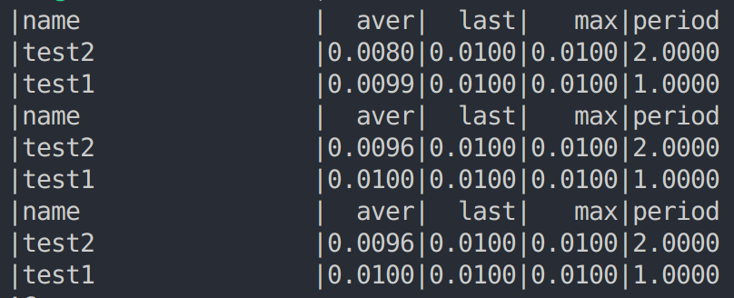

linux 系统下定时器设计及实现
在机器人控制系统中，实时性要求较高，控制任务需要通过定时器来精确控制运行频率。
而在linux系统下，timefd提供了一种基于文件描述符的定时器接口，允许用户程序通过文件描述符的可读事件来接收定时器的到期通知，且精度较高。
而为了减少在程序中不断去访问文件的可读事件，可以借用epoll的事件通知机制，无需轮询访问。
因此，结合timerfd和epoll，可以在linux系统下实现一个高效且精确的定时器，满足实时控制的需要。进一步，为了方便使用，可以使用C++进行类的封装。
具体实现
类的定义
主要定义三个类，首先是实现定时器功能的Timer类，其次是继承于Timer类的单例PrintTimer类，用来打印所有定时器的信息，最后是用来管理所有定时器的TimerManager类。
详细说明
1
2
3
4
5
6
7
8
9
10
11
12
13
14
15
16
17
18
19
20
21
22
23
24
25
26
| class Timer
{
public:
Timer(TimerManager* timerManager, uint16_t period, std::string name, std::function<void()> callback);
~Timer();
bool init();
void start();
void stop();
void printStatus();
std::string getName();
protected:
virtual void run();
int _epoll_fd;
int _timer_fd;
uint16_t _period;
std::string _name;
std::function<void()> _callback;
std::thread _thread;
std::atomic<bool> _running;
float _averageRuntime = 0;
float _lastRuntime = 0;
float _maxRuntime = 0;
};
|
如上所示，在Timer类中主要有init，start,stop,printStatus等成员函数，分别实现初始化，开始定时任务，结束定时任务以及打印定时任务信息的功能。
1
2
3
4
5
6
7
8
9
10
11
12
13
| class TimerManager
{
public:
TimerManager() = default;
~TimerManager() {};
void addTask(Timer* timer);
void printStatus();
void stopAll();
private:
std::unordered_map<std::string, std::unique_ptr<Timer>> _timers;
std::mutex _mutex;
};
|
对于TimerManager类，主要是addTask,printStatus两个成员函数，用来添加定时任务，打印定时任务的状态。
1
2
3
4
5
6
7
8
9
10
| class PrintTimer : public Timer
{
public:
PrintTimer(TimerManager* timerManager, uint16_t period)
: Timer(timerManager, period, "print-task", nullptr), _timerManager(timerManager) {}
private:
void run() override;
TimerManager* _timerManager;
};
|
PrintTimer类相对比较简单，主要实现了定时调用TimerManager的printStatus功能。
简单例子
1
2
3
4
5
6
7
8
9
10
11
12
13
14
15
16
17
18
19
20
21
22
23
24
25
26
27
| void printfun1(void){
std::this_thread::sleep_for(std::chrono::milliseconds(10));
}
void printfun2(void){
std::this_thread::sleep_for(std::chrono::milliseconds(10));
}
int main(void) {
TimerManager timerManager;
Timer timer_test1(&timerManager, 1000, "test1", printfun1);
Timer timer_test2(&timerManager, 2000, "test2", printfun2);
PrintTimer printTimer(&timerManager, 4000);
printTimer.start();
timer_test1.start();
timer_test2.start();
while(1){
std::this_thread::sleep_for(std::chrono::seconds(1));
}
return 0;
}
|
上述程序简单建立了两个实时任务，程序运行的效果如下所示：

程序定时打印了两个实时任务的信息，包括平均运行时间，上一次运行时间，最大运行时间和运行周期等信息。
程序源码
程序源码见定时器。